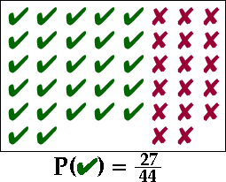

Experiments where all outcomes are equally likely
There are some kinds of experiment where we believe that all possible outcomes have the same chance of arising. This is usually justified symmetry in the physical mechanism underlying the experiment. For example,
Definition
If an experiment has N equally likely outcomes and an event, E, consists of x of them, then its probability is defined to be
\[P(E) = \frac x N\]In other words,
\[P(event) = \frac {\text{Number of outcomes in } event} {\text{Number of outcomes in sample space}}\]This is called the classical definition of probability and is the easiest to understand.
Rolling a 6-sided die
When rolling a standard 6-sided die, each of the six faces is equally likely. The probability of getting an even number greater than three is therefore
\[ \begin{aligned} P(\text{even value greater than 3}) & = P(\{\text{4, 6}\}) \\ & =\frac {\text{number of outcomes in {4, 6}}} {\text{number of outcomes in {1, 2, 3, 4, 5, 6}}} \\ & =\frac 2 6 = \frac 1 3 \end{aligned} \]Sampling a value from a finite population
Many applications with equally likely outcomes involve games of chance such as cards, dice and roulette wheels. However equally likely outcomes also arise when sampling a value from a finite population. If the value is randomly selected using some mechanism that gives all population members the same chance of selection, then probabilities can be determined in the same way.
Categorical example
In the population of 44 categorical values below, there are 27 'success' and 17 'failure' values. The probability that a single value sampled from this population is a success is therefore 27/44.

Household size in Mauritius
The bar chart below shows the sizes of all households in Mauritius in its 2011 census. Dual axes are shown to display both the number of households and proportion of each size.
If a single household is randomly selected in Mauritius, the probability that it will be of any particular size equals the population proportion of households of that size in the census.
Click on the bars to read off the probabilities.